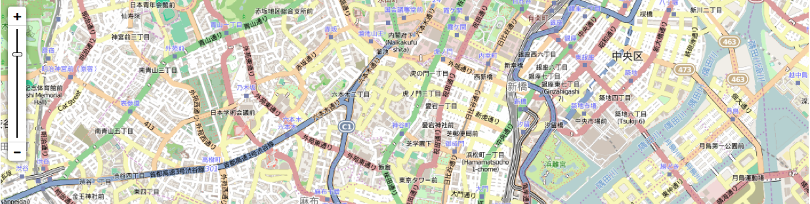
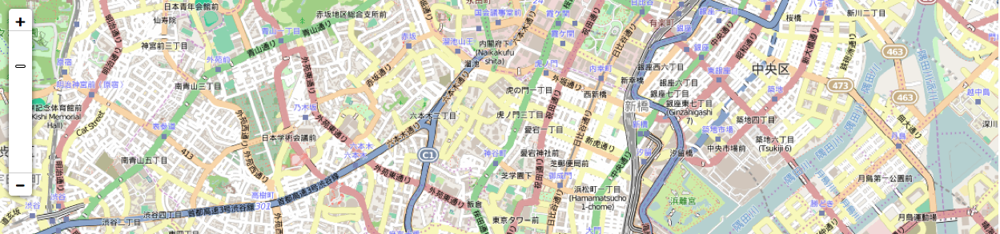

前回、leafletでズームスライダーを表示する方法をご紹介しましたが、
実は、Bootstrapを使っていると、ズームスライダーがうまく表示されなくなります。
今回はその解消方法について書きます。
leafletの地図の表示についてはこちらを参照
leafletの地図にズームスライダーを表示する方法についてはこちらを参照
事象
まず、Bootstrapを使っていない場合のスライダーはこんな感じ

Bootstrapを使っていると、こんなマヌケな姿に、、、

真ん中の線が消えて、
ツマミも小さくなってつまみづらくなっています。。。
対策
cssにこの記述を追加すると、元通りになります。
|
|
原因
なぜBootstrapを使うとスライダーの線が消えてしまったのでしょうか？
Bootstrapのcssにはこんな定義があります。
|
|
box-sizingはボックスサイズの算出方法を指定します。
border-boxだと線（border）と余白（padding）を幅・高さに含めるcontent-boxだと線（border）と余白（padding）を幅・高さに含めない
デフォルトはcontent-boxです。
スライダーのツマミを動かす部分は、L.Control.Zoomslider.cssでこのように定義されています。
|
|
背景色（background-color）が黒、横幅が２ピクセルになっています。
線のように見えていたのは、背景色だったのですね。
box-sizing: content-boxが指定されている状態だと、
このボックスの幅は、2px + 9px（ボーダーの太さ）* 2 = 20 となり、
背景色（黒）がみえる部分は 2px になります。
box-sizing: border-boxが指定されている状態だと、
このボックスの幅は、2px となり、
幅がボーダーラインよりも小さくなってしまって、背景色（黒）が見えなくなってしまうのです。
なので、 こんな感じで.leaflet-control-zoomslider-body のbox-sizingの定義を書き換えることで、スライダーの線が見えるようになるのです。
|
|
ツマミが小さくなってしまったのも、同じ理由になります。
GISとは関係のない話になりましたが、
いろんなcssを読み込むときは注意が必要ですね！
という話でした！